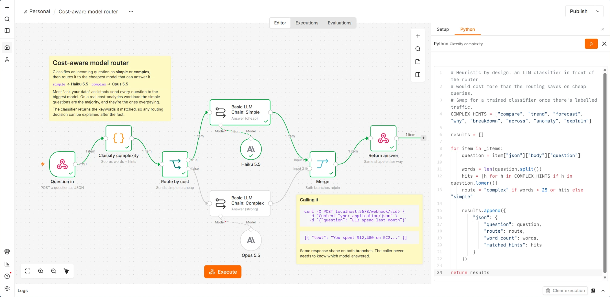

Cost-aware model router
An n8n workflow that classifies each incoming question as simple or
complex with a small Python heuristic (more than 25 words, or a word starting
with a hint such as why, trend or compare), then sends
simple questions to Claude Haiku 5.5 and complex ones to Claude Opus 5.5. Most questions are
simple, so most of them stop overpaying for the biggest model.
Source and setup on GitHub · Download workflow.json
Loading workflow preview…

Could not load the interactive preview, so this is a screenshot of the workflow.